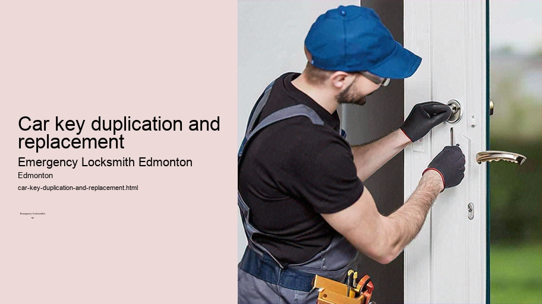

News
24/7 Emergency Locksmith Services
24/7 Emergency Locksmith Services
Emergency Locksmith Services
Residential lockout assistance
Automotive lockout services
Broken key extraction
Emergency lock repair and replacement
Commercial Locksmith Solutions in Edmonton
Commercial Locksmith Solutions in Edmonton
Highsecurity lock installations
Master key systems and rekeying services
Access control system integration
Panic bar installation and maintenance
Residential Locksmith Services in Edmonton
Residential Locksmith Services in Edmonton
Home lockout response
Rekeying existing locks for homes
Installation of new locks and deadbolts
Repairing or replacing residential locks
Automotive Locksmith Services in Edmonton
Automotive Locksmith Services in Edmonton
Car key duplication and replacement
Transponder key programming
Ignition repair and replacement services
Vehicle trunk opening
About Us

Car key duplication and replacement
Lock repair Edmonton
Car Key Duplication and Replacement: Necessity Meets Innovation
In a world that never stops moving, car keys are the silent facilitators of our daily transit. They unlock the doors to freedom, mobility, and convenience. However, they are also prone to being lost, damaged, or in need of duplication for shared usage. This is where the services of car key duplication and replacement come into play – an industry that has evolved from simple locksmithing to a sophisticated realm involving state-of-the-art technology.
The necessity for car key duplication arises in various scenarios.
Intercom system installation Edmonton
Lock repair Edmonton
A family might require multiple sets of keys for different drivers.
File cabinet locks Edmonton
Lock change services Edmonton
A business with a fleet of vehicles needs several copies to ensure all its employees have access when needed. Or perhaps you simply want a spare tucked away for peace of mind—a wise decision considering the inconvenience and potential danger of finding oneself locked out.
Meanwhile, replacement becomes imperative when keys are misplaced or stolen. With today's advanced security features, losing a car key can be more than just an annoyance; it can mean being stranded or having your vehicle's safety compromised. This is especially true as modern keys often include transponders or microchips that communicate with the car's ignition system to prevent theft.
The process of duplicating or replacing car keys used to be straightforward when keys were mere metal cuts uniquely patterned to fit locks. Traditional locksmiths could easily replicate these patterns using grinding machines.
Gate lock repair and installation Edmonton
But technological advancements have transformed both cars and their corresponding keys into sophisticated marvels.
Transponder keys, which contain chips programmed with codes that must match those within the ignition system, emerged as an anti-theft measure in the 1990s.
Master key systems Edmonton
Smart keys allow drivers to keep their fob in their pocket while locking, unlocking, and starting the car through proximity sensors and push-button ignitions – another leap towards enhanced security and convenience.
Given this complexity, duplication and replacement now often require specialized equipment and knowledge beyond conventional locksmith skills—sometimes even proprietary diagnostic tools available only at dealerships or specialized locksmiths who invest heavily in such technology.
The cost involved has risen accordingly. Replacing a modern key can be expensive due to not just hardware costs but also programming fees. Nevertheless, most would argue it’s a small price for securing one’s vehicle and maintaining seamless access to our automotive lifelines.
Moreover, there's been an increase in DIY solutions facilitated by online tutorials and aftermarket kits designed for those willing to tackle the challenge themselves—though success varies depending on technical proficiency and specific vehicle requirements.
Despite these changes—or perhaps because of them—the value proposition offered by professionals who provide these services remains strong. They offer not just expertise but also reassurance; knowing that your new key will work flawlessly is worth every penny spent on skilled craftsmanship.
Furthermore, specialists continuously adapt by staying abreast with each new wave of innovations brought forth by automotive manufacturers aiming at bolstering security measures further still—a testament to how critical these services are in our day-to-day lives.
In conclusion, whether we seek duplicates for convenience or require replacements out of urgency—it’s clear that the industry surrounding car key replication has become integral to our vehicular-centric society. It provides solace amidst chaos when we're faced with missing pieces—literally—and ensures continuity on life's many roads ahead.
Licensed locksmith Edmonton
Transponder key programming
Check our other pages :
Access control system integration
Home lockout response
Broken key extraction
Frequently Asked Questions
Can an emergency locksmith in Edmonton duplicate my car key on-site?
Yes, most emergency locksmiths in Edmonton can duplicate your car key on-site using mobile locksmith services equipped with the necessary tools and technology.
How long does it take for an emergency locksmith to make a replacement car key?
It typically takes an emergency locksmith anywhere from 20 minutes to an hour to make a replacement car key, depending on the complexity of the keys design and programming requirements.
Will I need to provide any documentation for car key duplication or replacement?
Yes, you will likely need to provide proof of ownership such as your vehicle registration or title, along with a valid photo ID, to ensure that the service is being provided for the rightful owner of the vehicle.
Is it possible to replace a lost or stolen smart key through an emergency locksmith in Edmonton?
Yes, many emergency locksmiths are equipped to replace lost or stolen smart keys. They have the technology required to program new keys to communicate properly with your vehicles immobilizer system.
What should I expect in terms of cost for duplicating or replacing my car keys with an emergency locksmith service in Edmonton?
The cost can vary widely based on the type of key and complexity of the electronic components involved. Basic car keys without electronic chips tend to be less expensive, while transponder chip keys and proximity smart keys are more costly due to their sophisticated programming. Expect costs starting from around CAD $50 for basic duplication and ranging up into several hundred dollars for high-tech smart keys.